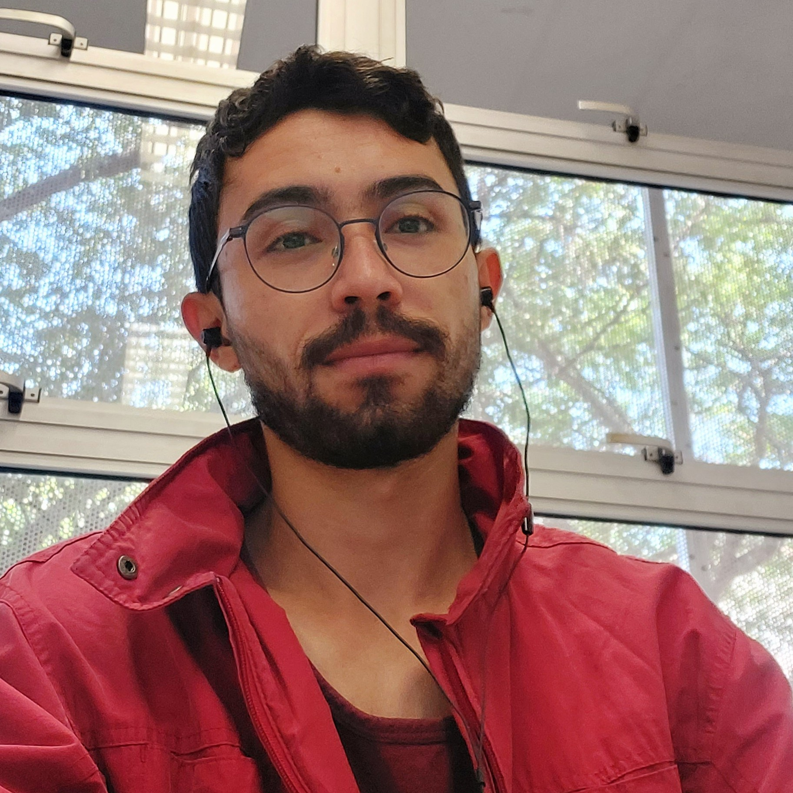

I am a PhD student at the Universitat Politècnica de Catalunya (UPC), working with the GAPCOMB group under the supervision of Prof. Richard Lang.
I previously earned a Master’s degree in Computer Science from the University of São Paulo (USP), where I was part of the COMBO group supervised by Prof. Guilherme Mota, and a Bachelor’s degree in Mathematics from the Federal University of Minas Gerais (UFMG), where I conducted undergraduate research with Prof. Maurício Collares.
My research interests include graph theory, extremal and probabilistic combinatorics, Ramsey theory, and related areas.
You can contact me at antonio.kaique@upc.edu